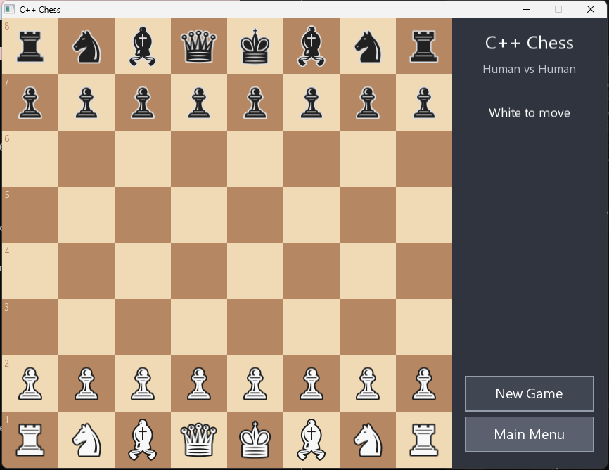

Chess is unusual among programs in that the hardest part has an exact answer. From any position, the number of legal move sequences to a given depth is a published constant, so a move generator is either exactly right or it is not, and there is no arguing with the count. That property is what drew me to build this: a complete desktop chess game, the kind a person downloads and plays, where the window, the menus, and the drag-and-drop sit on top of an engine whose correctness can be checked against numbers the chess programming community settled years ago. The result is a playable app with every rule of the game, an AI with three difficulty levels, and a test suite that compares the engine against more than ten million reference positions.

The shape of the program
The whole game is about nine hundred lines of C++20 in two
files, plus two test programs. Everything that knows the rules
of chess lives in a single header, chess.hpp: the
board, move generation, the draw rules, the evaluation, and the
search. It has no idea a window exists. The SFML front end in
main.cpp handles rendering, the menu, mouse input,
and the promotion picker, and talks to the engine only through
its public functions. That separation is what makes the engine
testable: perft.cpp and ai_test.cpp
drive it headlessly, with no graphics involved.
Step 1: the rules, all of them
Most hobby chess programs implement the moves everyone knows and quietly skip the edge cases. The edge cases are most of the work. Castling is the move where the king and a rook swap to safer squares in one turn, and it is legal only if neither piece has moved, no square the king crosses is attacked, and the king is not currently in check. En passant is the rule that lets a pawn capture an enemy pawn that just advanced two squares past it, but only on the very next move. Promotion turns a pawn reaching the last rank into a piece of the player's choice, which means the interface needs a picker, not an automatic queen.
The game also has to know when it is over, and not just by checkmate. The engine tracks the fifty-move rule (a draw when fifty moves pass with no capture or pawn move), threefold repetition (a draw when the same position occurs three times), and insufficient material (a draw when neither side has enough pieces left to ever deliver mate, such as king against king and bishop). Each of these interacts with the others, and a mistake in any of them produces games that end wrongly or never end at all.
Step 2: proving the move generator with perft
Perft, short for performance test, is the standard way to verify a chess move generator: count every legal move sequence from a position to a fixed depth and compare the total against published reference values. The numbers grow fast enough to catch almost anything. From the starting position there are exactly 20 legal first moves (each of the eight pawns can advance one or two squares, which is 16, and each knight has two destinations, which is 4 more). Black has the same 20 replies to each, so depth 2 is exactly 400. By depth 3 the symmetry is broken and the count is 8,902, and at depth 5 it is 4,865,609. One missed en passant capture or one illegal castle anywhere in that tree and the total comes out wrong.
The test suite runs five standard positions, including Kiwipete, a position designed by the chess programming community to be a torture test because castling rights, en passant, promotions, pins, and checks are all live at once. Every count matches the published values, more than ten million positions in total.
| Position | Deepest level checked | Positions at that depth |
|---|---|---|
| Starting position | depth 5 | 4,865,609 |
| Kiwipete | depth 4 | 4,085,603 |
| Position 3 (rook endgame) | depth 5 | 674,624 |
| Position 4 (promotions) | depth 4 | 422,333 |
| Position 5 (middlegame) | depth 3 | 62,379 |
Each position is also checked at every shallower depth, and all counts match the published references exactly.
Step 3: an evaluation the search can act on
To choose moves, the engine needs a number that says how good a position is. Chess engines measure this in centipawns, hundredths of a pawn's value, so the classic material scale becomes pawn 100, knight 320, bishop 330, rook 500, queen 900. Material alone plays terribly, though, because it has no opinion about where the pieces stand, so each piece type also gets a piece-square table: a grid of 64 bonuses and penalties, one per square. A knight in the corner carries a 50-centipawn penalty while a knight on a central square earns a 20-point bonus, so the same knight is worth 270 in the corner and 340 in the center, which is enough to make the engine develop its pieces toward useful squares without any explicit rule telling it to. Black uses the same tables with the rows mirrored, which in the 0-to-63 square indexing is a single XOR with 56.
Step 4: search, as negamax with alpha-beta
The search asks the only question that matters: if both sides play the best moves I can see, where does this position end up? That is minimax, evaluating the tree of possible continuations under best play by both sides. Negamax is the standard simplification: instead of separate maximizing and minimizing code, score every position from the perspective of the side to move and negate the score each time the search hands the move to the opponent. One function, half the code, same answer.
Searched naively the tree explodes, which is where alpha-beta pruning comes in. The idea fits in a sentence: once one reply refutes a move, stop looking at the other replies, because the opponent only needs one. If I am considering a move and the first response I examine already wins a rook for my opponent, no further responses can make that move look better for me, and the whole branch is abandoned. Pruning works best when the refutation is examined first, so moves are ordered before searching: captures ahead of quiet moves, biggest victims first, so taking a queen is tried before taking a pawn. With decent ordering, alpha-beta searches roughly the square root of the positions plain minimax would visit, which is the difference between depth 4 being instant and being unplayable.
Step 5: the horizon problem and quiescence
A fixed-depth search has a blind spot called the horizon effect. Suppose the search ends exactly one move after the engine plays queen takes pawn. The evaluation sees an extra pawn and reports the engine is winning, but the very next move, just past the horizon, the queen is recaptured and the engine is down a queen for a pawn. The standard fix is quiescence search: when the main search runs out of depth, do not evaluate immediately. Keep searching, but only through captures, until the position goes quiet, and only then trust the evaluation. This engine extends up to four plies of captures, which is enough to stop it walking into simple recapture traps while keeping the search fast.
Step 6: difficulty without scripted blunders
The three difficulty levels do not inject fake mistakes. Easy, Medium, and Hard search to depths 2, 3, and 4, and the lower levels also pick randomly among any root moves scoring within a margin of the best (70 centipawns on Easy, 30 on Medium, 0 on Hard). A weaker level still plays reasonable chess; it just sees less far ahead and is less predictable, which feels much more like a human club player than an engine that occasionally hangs its queen on purpose.
The random pick forced one design choice worth explaining. Deep in the tree, alpha-beta is free to prune, but at the root every move is searched with a full window:
// Search each root move with a full window so every move gets its true
// score. (A shared narrowing window would make pruned moves report the
// alpha bound instead of their real value, corrupting the pick below.)
// Deeper plies still prune with alpha-beta, which is where the savings are.
for (const Move& m : moves) {
GameState n = makeMove(s, m);
int val = -negamax(n, depth - 1, -INF, INF, 1);
scored.push_back({val, m});
}With a shared narrowing window, a root move that gets pruned reports a bound rather than its real score, and a bound is useless for deciding whether the move falls inside the 70-centipawn pool. Searching the root with full windows costs a little speed and buys true scores for every candidate, and the deeper plies still prune normally, which is where nearly all of the savings live anyway.
Step 7: keeping the window responsive
A depth-4 search can take a moment, and a UI that freezes while
the computer thinks feels broken even when nothing is wrong.
The front end therefore hands the search a copy of the game
state and runs it on a background thread through
std::async, polling for the result each frame
while the window keeps rendering, animating the pulse on the
thinking indicator, and responding to the mouse. Because the
engine works on a value snapshot rather than shared state,
there is nothing to lock and no way for a click during the
search to corrupt the position.
The interface
The front end is SFML 3. Pieces move by drag-and-drop, legal destinations appear as dots the moment a piece is picked up, the last move and any check stay highlighted, and the board flips when you play Black so your pieces always start at the bottom. Promotion pops up a picker over the board. One design decision I enjoyed: the pieces are Unicode chess glyphs drawn from fonts that ship with Windows, so the game needs no image assets at all, and the window, menu, and side panel are laid out from the same small set of spacing constants so the whole thing reads as one coherent surface.
Testing the search, and what is missing
Perft proves the move generator, but the search needs its own checks. A second test program verifies behavior a correct search cannot fail: given a mate-in-one position it finds the mate, given a hanging queen it takes the queen, and a full self-play game terminates in a legal game-over state rather than looping forever, which exercises the draw rules under real conditions.
The engine is deliberately simple, and the gaps point at what each classic technique is actually for. There is no transposition table, the cache that recognizes positions reachable by different move orders, so the search re-derives work it has already done. There is no iterative deepening, so the engine cannot use a shallow search to order moves for a deeper one. The evaluation knows nothing about king safety or pawn structure beyond what the square tables imply, and there is no opening book, so the first moves come from the same search as everything else. Each of those is a well-understood upgrade with a measurable payoff, which makes this less a finished engine than a clean baseline that plays a fair game of chess and can prove the part of itself that has a proof.